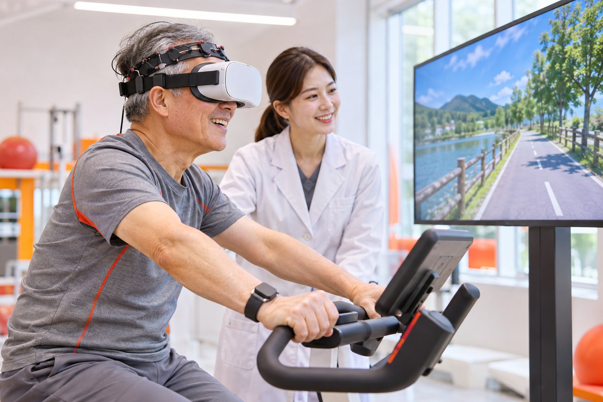

Home / About
Restoring movement, improving lives.
We combine evidence-based physical therapy with smart rehabilitation technology to restore function and improve quality of life.

Smart Rehabilitation Lab aims to restore movement and improve quality of life through evidence-based physical therapy and smart rehabilitation technology.
Our work focuses on people with musculoskeletal and neurological conditions and on older adults.
Our principles.
Evidence
We test rehabilitation interventions with randomized controlled trials, systematic reviews and meta-analyses.
Technology
We apply virtual reality, wearable sensors, functional near-infrared spectroscopy (fNIRS) and non-invasive brain stimulation to rehabilitation.
People
We train clinical researchers and physical therapists who practice patient-centered rehabilitation.
Welcome to our lab.
Rehabilitation is more than restoring impaired function. It is the journey of a person returning to their daily life. Our lab aims to support that journey with scientific evidence and technology.
From musculoskeletal rehabilitation of the shoulder, ankle and lower back, to neurological rehabilitation after stroke and in cerebral palsy, the neuroscience of chronic pain, and rehabilitation for older adults using virtual reality and wearable sensors, we pursue research that answers questions from clinical practice.
Our members challenge themselves together to grow into researchers who connect clinical practice and research. We look forward to welcoming passionate people who want to shape the future of rehabilitation with us.
Seungwon Lee, PhDProfessor, Department of Physical Therapy, Sahmyook University
History.
- 2008Appointed to the Department of Physical Therapy, Sahmyook University
- 2011First publications on stroke rehabilitation (Journal of Physical Therapy Science)
- 2021Developed a 360-degree VR-based immersive cycle training system for older adults (BMC Geriatrics)
- 2022Published a pain neuroscience education RCT following arthroscopic rotator cuff repair (Brain Sciences)
- 2025Published a wearable sensor-based cognitive-motor training RCT for older adults (Scientific Reports)
- 202683 research works registered in ORCID
Looking for people to research with.
We welcome M.S. and Ph.D. students and researchers interested in evidence-based rehabilitation and smart rehabilitation technology.